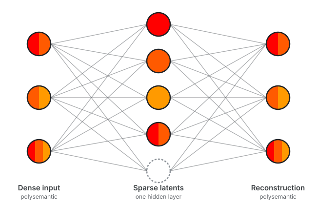
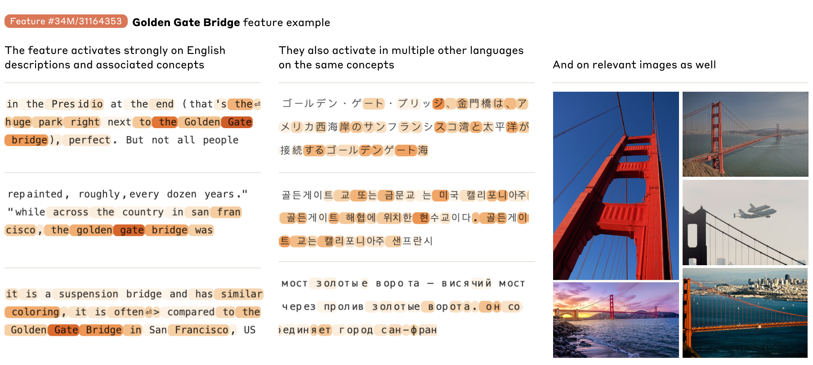
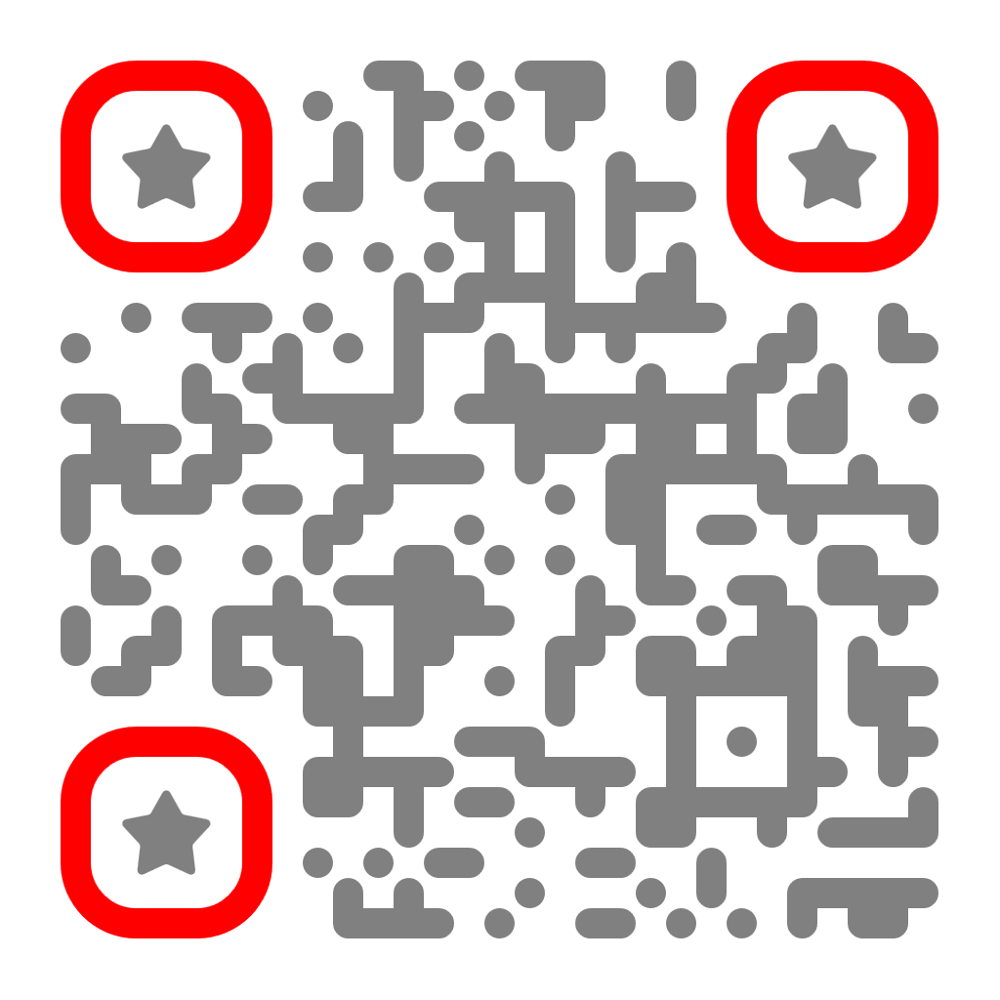

EuCAIFCon 2026
Finding and using interpretable latents in a neutrino foundation model with sparse autoencoders


01 · Tool
Polysemanticity and Sparse Autoencoders
XAI fails to explain global behavior
↓
Reverse engineering with Mechanistic interpretability
↓
But neurons are polysemantic
↓
Sparse autoencoder

02 · Promise and limits
What sparse features promise ...
What sparse features promise ... and what they do wrong

A single SAE feature recognizes the Golden Gate Bridge across languages and images.
Identify latents
Improve model, Learn from them?
Act on the representation
Amplify, suppress, or steer them.
Sparse ⇒ interpretable ⇒ causal
Readable latent?
Hard to tune
Expensive at large scale
How to find interpretable concepts in Physics foundation models?
08 · Take-home message
Take home
For interpretability people:
SAEs are worth it: they let you steer directly in latent space.
For foundation model users:
Check your latent representation!!
For everyone?
Understanding our models might be our future jobs..
